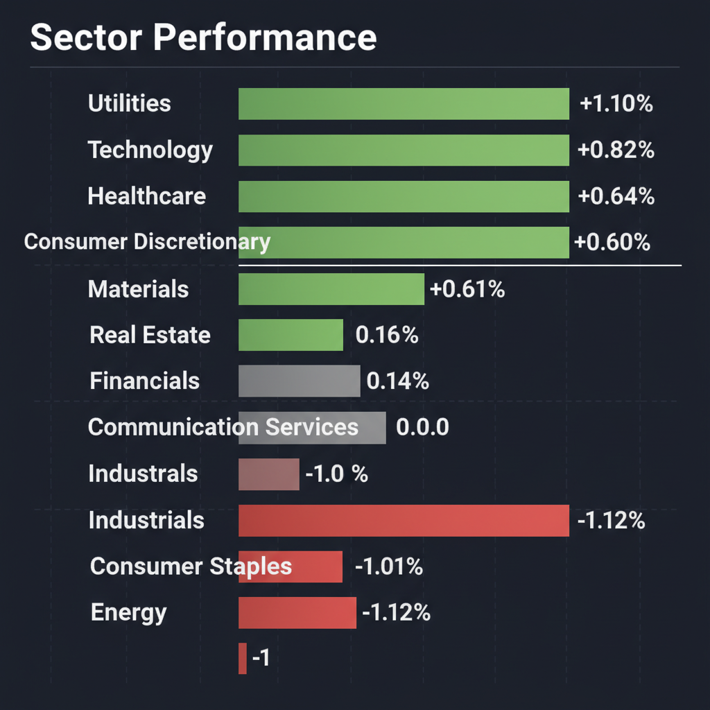
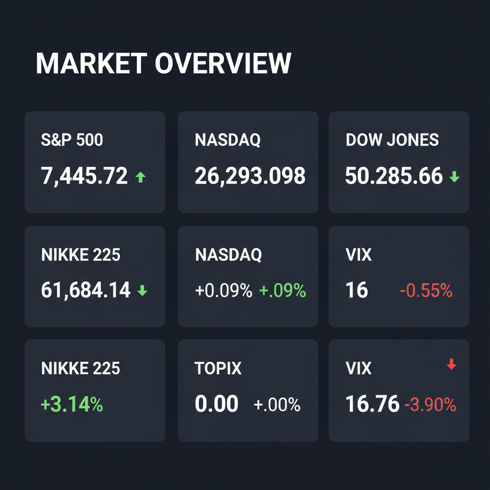

Daily Investment Report - 2026-05-22
Generated: 2026/5/22 7:37:32


本日の投資チームミーティングにおける各専門家の分析を統合した、投資家向けの最終レポートをお届けします。
1. エグゼクティブサマリー
現在の市場は「AIインフラ・半導体」への構造的な資金シフトとメガIPOへの熱狂により最高値圏にありますが、裏側ではイラン地政学リスクとインフレ再燃の火種が燻る極端な二極化相場です。大型ハイテク銘柄はバリュエーションの過熱とバブル的兆候が見られるため、今後はリスクを抑え、高収益な「隠れた中小型株」と「インフレ・地政学ヘッジ」へ資金を分散させることが超過収益と資産防衛の鍵となります。
2. 注目銘柄リスト
大型株の過熱を避け、時価総額が小さく市場にまだ十分に評価されていない銘柄を中心に選定しています。
強気（買い推奨）
- 日本電子材料 (6855) [時価総額: 約500億〜600億円]: AI特需の裏側で半導体検査用部材を供給するニッチトップ企業であり、高収益かつキャッシュリッチな財務体質を持つため下値リスクが極めて限定的です。
- セーレン (3569) [時価総額: 約1000億円台]: 「悪い情報に報酬を出す」という独自の強固なガバナンス体制を持ち、高付加価値化によって中長期的な営業利益率の改善トレンドが明確な質の高いバリュー銘柄です。
- CAE (CAE) [時価総額: 中型]: 決算自体は良好なものの「変革コスト」が嫌気され売り込まれていますが、参入障壁が高く強固なフリーキャッシュフロー創出力を持つため、絶好の押し目買い候補となります。
中立（様子見）
- オムロン (6645) [時価総額: 大型〜中型]: 業績未達により株価が下落しており、マクロ環境の不透明感による利益率の底打ちと在庫調整の完了がデータで確認できるまでは手出し無用です。
- Oura (未上場) [時価総額: 推定数十億ドル規模]: 秘密裏にIPO申請を行ったスマートリング企業。AIと生体データを独占するサブスクリプションモデルは魅力的ですが、上場時の評価額（バリュエーション）を見極める必要があります。
弱気（警戒）
- IonQ (IONQ) [時価総額: 約15億〜20億ドル]: 量子コンピューティング市場への投機的熱狂の受け皿になっていますが、激しいキャッシュバーンを伴う赤字企業であり、金利高止まり環境下では資金繰りリスクが極めて危険です。
- キオクシア (関連含む) [時価総額: 国内4位水準]: 純利益48倍の報道で市場は熱狂していますが、半導体メモリは典型的な景気循環（シクリカル）産業であり、ピーク利益を織り込んだ現在の価格は「バリュートラップ」の恐れが強いです。
3. セクター推奨ランキング
1.
エネルギー（XLE）: イラン戦争やホルムズ海峡封鎖といった中東地政学リスクに対する「最強のポートフォリオヘッジ」であり、AIデータセンターの膨大な電力需要の恩恵も受けます。
2.
金融（XLF）: インフレの粘着による「金利の高止まり（Higher for Longer）」環境下において、利ザヤの改善という恩恵を直接的に享受できます。
3.
公益事業（XLU）: ハイテク株の高値警戒感から資金が逃避し始めており、安定したキャッシュフローと配当がボラティリティ上昇時の強固な防御壁として機能します。
4.
テクノロジー・ハードウェア（中小型限定）: ソフトウェアからAIインフラへのパラダイムシフトは不可逆的ですが、大型株は過熱しているため、省電力化や冷却技術などを担う「黒字の中小型裏方銘柄」に投資を限定すべきです。
5.
一般消費財・小売（XLY / XLP）: ガソリン価格の高止まりとインフレが低〜中所得者層の購買力を直撃しており、利益率の圧迫が避けられないため最も警戒すべきセクターです。
4. 今週の注目イベント
- 木曜日: AI・テクノロジー関連企業等の決算発表（Nvidia決算通過後のスマートマネーの資金移動に注目）
- 木曜日: プロゴルフツアー「LIV Golf」の最大3億5000万ドルの新規資金調達に向けた投資家ピッチ開始
- 随時: IEA（国際エネルギー機関）が警告する、夏の旅行シーズンに向けた原油在庫の減少およびガソリン価格データの発表
- 随時: Oura（スマートリング）のSECへの秘密裏のIPO申請に関する進捗および評価額のリーク報道
5. リスク要因
- スタグフレーション・ショック: ホルムズ海峡の完全封鎖などが引き金となり、原油市場が「レッドゾーン」へ突入し、インフレ再燃と企業業績の圧迫が同時に発生するリスク。
- メガIPOにおける「ババ抜き」構造: SpaceX等の超大型IPOにおいて、インサイダー（未公開時の大口投資家）のロックアップ期間が通常より短く設定されており、熱狂する個人投資家へ高値で株を売り抜ける出口戦略リスク。
- AI過剰投資の逆回転: データセンターへの過剰な設備投資が将来的に莫大な減価償却費負担となり、利益成長の鈍化とマルチプル（PER）の急縮小を招くリスク。
- VIXの異常な低水準とオプションの熱狂: VIXが16台まで押し下げられる一方、量子関連等で20万契約ものオプション投機が起きており、突発的な悪材料でガンマ・スクイーズが逆回転し相場がフラッシュクラッシュを起こすリスク。
6. アクションアイテム
- 現在保有している大型ハイテク株やAI関連銘柄のポジションを直ちに縮小し、利益を確定させる。
- 維持するロング（買い）ポジションには、直近のサポートライン（20日移動平均線など）のわずか下に、機械的なタイト・トレイリングストップ（逆指値注文）を設定する。
- ポートフォリオの現金（キャッシュ）比率を最低でも20〜30%に引き上げ、ボラティリティ急増時の押し目買いに向けた待機資金を確保する。
- 資金の数%をエネルギーETF（XLE）やVIX指数のコールオプション購入に割り当て、地政学リスクに対するテールリスク・ヘッジを即座に構築する。
- 決算発表の先回り戦略として、赤字のグロース株を投資対象から除外し、AI・半導体需要の恩恵を受ける「黒字かつキャッシュリッチな中小型部品・インフラメーカー」のスクリーニングを実行する。